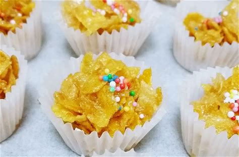

Cornflake Cakes

Melted chocolate mixed with cornflakes, spooned into cupcake cases, and chilled. No baking required — just mixing and setting, making it a beginner-friendly dessert.
Ingredients
- 3 tablespoons Butter
- 200 grams Sugar
- 1 tablespoon Honey
- 4 cups Cornflake
Steps:
-
Preheat oven to 150 degree Celsius
-
Heat the butter, sugar and honey in a small saucepan until frothy, then remove from the heat.
-
Add cornflakes and mix well.
-
Spoon into cupcake cases and bake for 10 mins. Remove from the oven and leave to cool before handing them out
Home